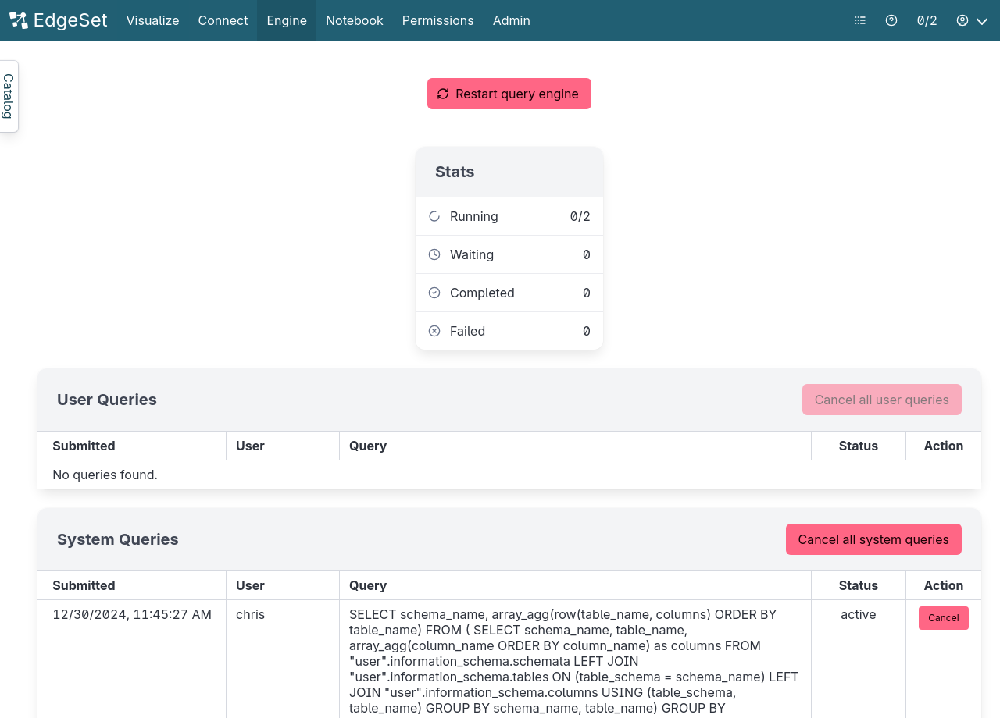
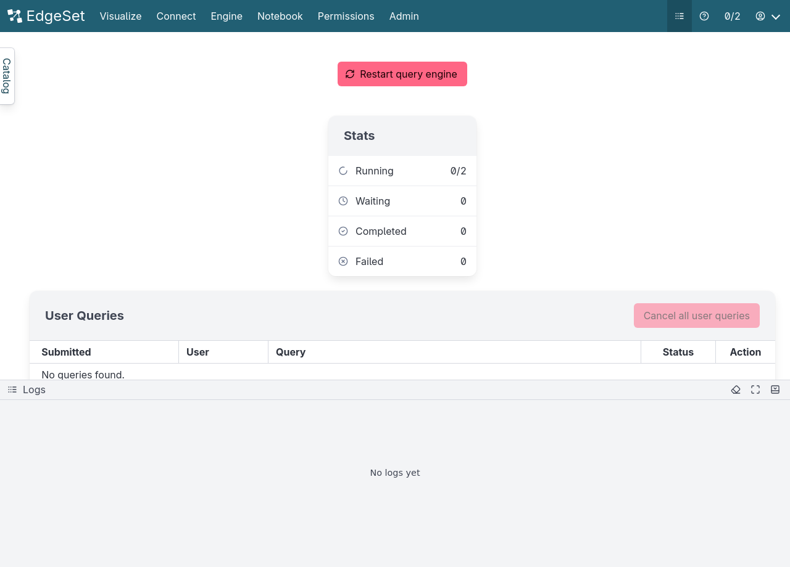

5 Query Engine
The query engine does the work of breaking down a SQL query and executing it.
5.1 Restarting the engine
When you add a new data source to EdgeSet, you must restart the query engine in order for EdgeSet to connect to the data source and map the data into the catalog.
You can also restart the query engine any time from the Engine menu.
5.2 Engine stats
Navigating to the Engine menu will show you statistics about the query engine, such as the number of running and queued queries.

5.3 Query Management
You can view and manage currently running or queued queries in the User Queries and System Queries tables.
5.3.1 User Queries
The User Queries table will display the list of currently running or queued queries executed by users of Edgeset with the following details:
- Creation date: The date and time in which the query was submitted formatted in local timezone.
- User: The user running the query.
- Query: The query string.
- Status: Status of the query.
- Action: Display’s a cancellation link to cancel the associated query.
You can cancel a query individually associcated with a user or cancel all the queries by clicking the Cancel all queries button present in the header of the query management tables.
5.3.2 System Queries
The System Queries table displays the list of currently running or queued queries executed by the Edgeset user interface (such as for displaying the data catalog). System queries are special in that they don’t count towards the concurrent query limit and are executed as soon as possible.
Note: Unless necessary it’s advisable not to cancel the displayed system queries as it could lead to unexpected errors for users.
5.4 Logs
If adding a data source doesn’t work as expected, you can open the Logs to view log messages.
5.4.1 Opening the Logs
Open the logs by clicking on Logs icon in the menu, a panel will pop out from the bottom of the page.

Note that only the last 1000 log entries are displayed.